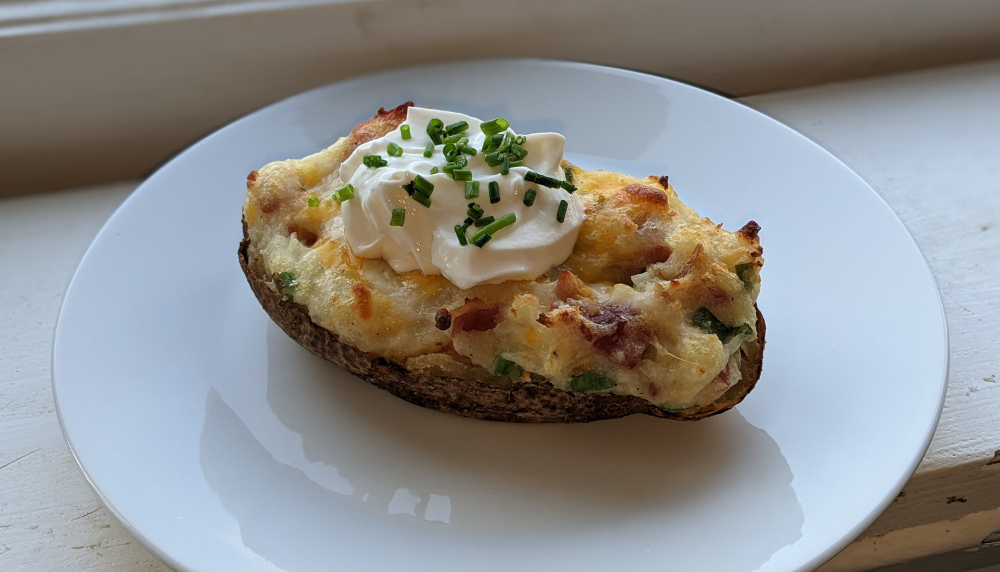

Twice Baked Potatoes

Author: Derek Nichols |
Cooked: March 20, 2022
Yields: 8 Servings | Prep Time: 15 Minutes | Cook Time: 75 Minutes
Ingredients
- 4 large russet potatoes
- 1 Tbsp olive oil
- 1/2 tsp salt
- 6 pieces thick-cut bacon
- 8 Tbsp unsalted butter
- 1/3 c. milk or cream
- 1 1/4 c. shredded cheese (we used Mexican blend)
- 3 green onions
- 1/4 tsp salt
- 1/4 tsp pepper
- 1 1/2 Tbsp chives
- Sour cream
Directions
- Preheat oven to 425°F. Wash potatoes and dry well. Stab each potato 8 times with a fork. Rub olive oil onto each potato and sprinkle with salt.
- Bake potatoes for 70 minutes or until you can pierce with a knife with no resistance.
- While potatoes bake, cook bacon until golden. Dry bacon with paper towels and chop coarsely.
- When potatoes are done, remove from oven and lower temperature to 375°F.
- Cut potatoes in half lengthwise and scoop out potato flesh into a bowl leaving about 1/4" layer of potato stuck to the skin.
- Add butter, milk, salt, and pepper and mash until smooth. Add in 1 c. of cheese, the green onion, and most of the bacon. Stir to combine.
- Fill potato skins with the potato mixture. Top with the remaining cheese, and bake for 20 minutes until the cheese is melted and bubbly.
- Garnish the potatoes with sour cream, chives, and the remaining bacon.
Additional Notes
- Try to pick potatoes which are more round rather than long.